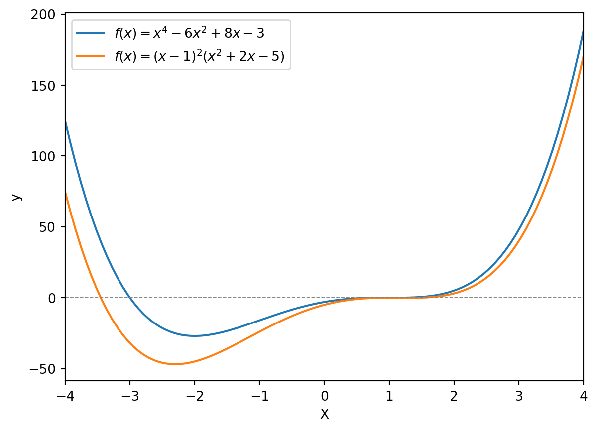

高階微分法とライプニッツの公式
\(y = f(x)\) の導関数を \(f^\prime(x)\) とするとき，第二階の導関数を \(f^{\prime\prime}(x)\) と表記し，第 \(n\) 階の導関数を \(f^{(n)}(x)\) と表記します． 一点 \(x\) において
\[ \begin{gather} f^{\prime\prime}(x) = \frac{d}{dx}\left(\frac{dy}{dx}\right) = \frac{d^2y}{dx^2}\\ f^{(n)}(x) = \frac{d^ny}{dx^n} \end{gather} \]
となります．
▶ 記号の差異: \(d^2y\) vs \(dx^2\)
\(d^2y = d(dy)\)，\(dx^2 = (dx)^2\) の意味で，この意味の差異を表現するため記号でも表記が異なっています．微分記号を用いて
\[ dy = f^\prime(x)dx \]
と書くとき，両辺の微分を取れば，
\[ \begin{align} d(dy) &= \frac{d(f^{\prime}(x))}{dx}(dx)^2 + f^\prime(x)\frac{d(dx)}{dx}dx\\ &= f^{\prime\prime}(x)(dx)^2 + f^\prime(x)d(dx) \label{eq-second-diff} \end{align} \]
\(x\) が独立変数であるならば \(dx\) は \(x\) の水準関係なく自由に取れるので，\(\frac{d(dx)}{dx} = 0\)．従って，
\[ d^2y = f^{\prime\prime}(x)dx^2 \]
となります．もし，\(x = \varphi(t)\) であるならば，\(d^2x = \varphi^{\prime\prime}(t)dt^2\) となるので
\[ \frac{d}{dt^2}f(\varphi(t)) = f^{\prime\prime}(\varphi(t))(\varphi^\prime(t))^2 + f^\prime(\varphi(t))\varphi^{\prime\prime}(t) \]
ライプニッツの公式
Theorem 1 : ライプニッツの公式(Leibniz rule)
\(u, v\) が \(x\) の関数であるとき，
\[ \begin{align} \frac{d^n(uv)}{dx^n} &= u^{(n)}v + \left(\begin{array}{c}n\\1\end{array}\right)u^{(n-1)}v^{\prime} + \left(\begin{array}{c}n\\2\end{array}\right)u^{(n-2)}v^{\prime\prime}+\cdots+ \left(\begin{array}{c}n\\n-1\end{array}\right)u^{\prime}v^{(n-1)} +uv^{(n)}\\ &= \sum_{k=0}^n \left(\begin{array}{c}n\\ k\end{array}\right)u^{(n-k)}v^{(k)} \end{align} \]
Example 1
\(y = x^2\sin(x)\) について \(n\) 階導関数を求めめたいとします．
\[ (\sin x)^{(k)} = \sin\left(x + \frac{\pi}{2}k\right) \]
であるので
\(n=1\) のときは
\[ y^\prime = x^2\sin\left(x + \frac{\pi}{2}\right) + 2x\sin(x) \]
\(n\geq 2\) のときは，\(x^2\) が2回微分可能であることを考慮してライプニッツルールを利用すると
\[ \begin{align} \frac{d^n}{dx^{n}}(x^2\sin x) &= x^2(\sin(x))^{(n)} + 2nx(\sin(x))^{(n-1)} + n(n-1)(\sin(x))^{(n-2)}\\ &= x^2\sin\left(x + \frac{\pi}{2}n\right) + 2nx\sin\left(x + \frac{\pi}{2}(n-1)\right) + n(n-1)\sin\left(x + \frac{\pi}{2}(n-2)\right) \end{align} \]
Example 2
\[ \begin{align} (x\sin x)^{(n)} = x\sin\left(x + \frac{\pi}{2}n\right) + n \sin\left(x + \frac{\pi}{2}(n-1)\right)\\ (x\cos x)^{(n)} = x\cos\left(x + \frac{\pi}{2}n\right) + n \cos\left(x + \frac{\pi}{2}(n-1)\right)\\ (x^2\exp(x))^{(n)} = x^2\exp(x) + 2nx\exp(x) + n(n-1)\exp(x) \end{align} \]
有限個の多項式のテイラー展開
\(n\) 次式の \(f(x)\) を考えます．このとき，定義域の任意の点 \(a\) を用いて，以下のように表すとします
\[ f(x) = a_0 + a_1(x-a) + a_2(x-a)^2 + \cdots + a_n(x-a)^n \]
\(x = a\) のとき，\(f(a) = a_0\)．両辺を \(k\) 回微分すると
\[ f^{(k)}(x) = a_kk! + a_{k+1}\frac{(k+1)!}{1!}(x-a) + a_{k+2}\frac{(k+2)!}{2!}(x-a)^2 + \cdots + a_{n}\frac{n!}{(n-k)!}(x-a)^{n-k} \]
このとき，\(f^{(k)}(a) = a_kk!\) であるので，\(a_k = \frac{f^{(k)}(a)}{k!}\) を得る．従って，\(n\) 次式の \(f(x)\) は
\[ f(x) = f(a) + \frac{f^{\prime}(a)}{1!}(x-a) + \frac{f^{(2)}(a)}{2!}(x-a)^2 + \cdots + \frac{f^{(n)}(a)}{n!}(x-a)^n\label{eq-poly} \]
と表すことが出来ます．
Example 3
\(f(x) = x^n\) を
\[ f(x) = a_0 + a_1(x-1) + a_2(x-1)^2 + \cdots + a_n(x-1)^n \]
で表したいとします．このとき，\(\eqref{eq-poly}\) より
\[ \begin{align} x^n &= 1 + \frac{n}{1!}(x-1)+ \frac{n(n-1)}{2!}(x-1)^2 + \cdots + \frac{n!}{n!}(x-1)^n\\ &= \sum_{k=0}^n \left(\begin{array}{c}n\\ k\end{array}\right)(x-1)^k \end{align} \]
と表せます．これを更に式変形すると
\[ \begin{align} \sum_{k=0}^n \left(\begin{array}{c}n\\ k\end{array}\right)(x-1)^k &= \sum_{k=0}^n \left(\begin{array}{c}n\\ k\end{array}\right)(x-1)^k 1^{n-k}\\ &= (x - 1 + 1)^n\\ &= x^n \end{align} \]
よって \(x^n\) の \(x = 1\) まわりでのテイラー展開は \((x - 1 + 1)^n\) の二項展開と関係づけて理解することが出来ます．
Theorem 2
\(n\) 次式の \(f(x)\) について，\(x=a\) が \(k\) 重解であるための必要十分条件は
\[ \begin{gather} f(a) = f^\prime(a) = \cdots = f^{(k-1)}(a) = 0\\ f^{(k)}(a) \neq 0 \end{gather} \]
Example 4
\[ f(x) = x^4 + ax^2 + bx + c = 0 \]
が \(x=1\) を３重解に持つようにするようにパラメータを定めたいとします．
\[ \begin{align} f(1) &= 1 + a + b + c = 0\\ f^\prime(1) &= 4 + 2a + b = 0\\ f^{\prime\prime}(1) &= 12 + 2a = 0\\ f^{(3)}(1) &= 24 \neq 0\\ \end{align} \]
これを解くと，\((a, b, c) = (-6, 8, -3)\)．これを用いて整理すると
\[ f(x) = (x-1)^3(x+3) \]
となります．
Code
import numpy as np
import matplotlib.pyplot as plt
def func_x(x, a, b, c):
return x**4 + a*x**2 + b*x + c
x_domain = np.linspace(-4, 4, 100)
plt.plot(x_domain, func_x(x_domain, *(-6, 8, -3)), label='$f(x) = x^4 - 6x^2 + 8x - 3$')
plt.plot(x_domain, func_x(x_domain, *(-8, 12, -5)), label='$f(x) = (x-1)^2(x^2+2x-5)$')
plt.xlabel('X')
plt.ylabel('y')
plt.axhline(0, color='gray', linestyle='--', linewidth=0.7)
plt.legend()
plt.xlim(-4, 4)
plt.show()